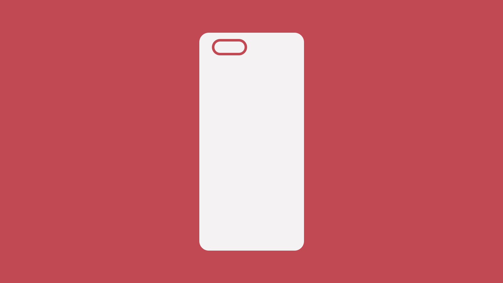

Using a phone from 2017 in 2021

The phone I’ve been using every single day for the past 45 months, which has also been my trusty companion across 5 different countries, is still perfectly fine!
So which phone is it?
It’s a OnePlus 5, bought in June 2017.
Ever since I started enjoying the Android world, I liked what OnePlus was doing. They offered a great phone for a great value, back when the Android ecosystem was a real mess. Very clean software packed with great hardware provided an excellent experience. That is, for those who could get their hands on one anyway.
Back in the day OnePlus was an invite-only kind of company. Which pretty much left me empty handed for a long time.
When the OnePlus 3T came along, I stumbled upon OnePlus again. And this time, if I remember correctly, the invite system was gone. So I started to develop a real interest for these phones.
My smartphone history
I was one of those people that didn’t see the interest in buying a multiple hundred phone, mainly because I was already carrying a mobile phone which had very little usage. A phone call here and there, a couple of messages and that was it. That was a Motorola L6, for the record.
iPhone 3GS
But then, as developers started to create the overwhelming amount of apps, in the early days of iOS, I started to acknowledge a phone can do much more than what I was used to. So as soon as the iPhone 4 came out (around June 2010) I pulled the trigger… On the iPhone 3GS, that is! Why? Because I didn’t want a slab — that the iPhone 4 was — in my pocket and I also didn’t want to commit that much money into a system I didn’t know that well. Used it for almost 3 years. Never got an iPhone again.
I liked it, don’t get me wrong! I had lost of fun with it, but the whole system was always a bit off to me. Eventually I tried jailbreaking it and it did open a few more doors, but it still wasn’t spectacular.
At some point I passed it on to my dad to introduce him on the smartphone world. He’s still with iOS to this day!
HTC One
Since I wasn’t completely happy with iOS, at some point I decided to look elsewhere. At that time (in 2013), Android was ugly AF. But some manufacturers were actually improving the experience and offering a nice form factor with it. The HTC One (also known as “One M7”) felt like something pulled out of my dreams. Curved back, matte black, double front facing speakers, edge to edge glass (not display)… It was gorgeous!
At that time, Google was doing partnerships with phone manufacturers. They would release a phone just like their flagship, but with vanilla Android — these were called Google Play Edition phones. The M7 had one of those. But mine wasn’t. So when I got fed up with HTC’s quirks I installed a custom vanilla Android ROM and it flew!
To this day, that’s my backup phone whenever I need one, for whatever reason. I know I can trust it, and it never disappoints. Used it as my daily phone for a little over 3 years.
LG V10
So, I like Android. In 2015 a lot of great Android phones are coming out and Android itself has matured enough to be a stable and beautiful system to work with.
At this point, I thought it would be great to experience what the so called flagship is all about. I looked around, and LG was doing great things back then. They had just released this LG V10 — a phone built like a tank!
For the first time, I wouldn’t need to use a case on a phone! With a body made of rubbery plastic, a removable back and stainless steel rods — yes, that’s actually stainless steel! — on each side. I don’t think it ever fell out of my hands. And I eventually put a case on it, because… I’m a case guy apparently.
For the first time I was experiencing a fingerprint reader (on the back). A very fiddly one, I must say. It always felt like something didn’t go well. But it never popped out either. And LG was experimenting with a second mini display at the front on this phone. Almost like a dock display. Something you could use to quickly launch your most used apps and a few other useless gimmicks.
A great phone overall! Cost me about 700€ at the time. That was completely absurd by my standards — let’s be clear about that! And then… One day, I woke up. The battery was almost dead. I plugged it in, and went for breakfast. It had quick charge already so I knew I would have plenty of charge when I came back. Little did I know, I would come back to a completely dead phone!
That’s right, the most rugged phone I ever bought, had a “heart attack” and died suddenly. I had used it for a little over 1 year at this point, so that was still under warranty. So the logical thing to do was to send it back. They took roughly 1 month to solve the issue. Guess what phone I was using as a backup? Yep — the almighty HTC One, with a custom ROM.
When it came back I couldn’t trust it anymore. Shoved it into some drawer and looked around for a replacement.
OnePlus 5
Roughly at the same time, OnePlus was teasing the 5 — like they have been doing for the past years. They take care of leaking everything themselves before the actual release date. But hey, if it works for them, why not?
So as you know already, as soon as the OnePlus 5 came out, I got it.
That as me going back to a cheaper phone, around 500‚Ǩ, and also another matte black metal body. Now that I think of it, I realize I only had black phones! Talk about love üñ§
Blazing fast fingerprint reader — still one of the fastest I’ve ever used! Lovely, clicky buttons, which sometimes is overlooked by phone manufacturers, along with good haptics. Cameras weren’t that great, but I was happy to have a clean OS again. With very useful additions only, and zero bloatware. Plus, it had the fastest charging at that time, at 20W. Oh, and my first AMOLED display! Just gorgeous! Every single bit of it was very appreciated.
At some point the dark theme craze came along, and I love me some dark themes everywhere! I even enrolled in OnePlus’ beta program to have access to software updates sooner.
But then OnePlus did something I will never forgive them for (and makes absolutely no sense in my world): they released a version through the stable channel that’s more recent than the one in beta.
Basically, OnePlus said: screw you, beta users, we’re going straight to production. That’s when I realized I was stuck in OP5_O2_BETA_35 forever, as that was the last beta ever released for this phone.
On the good side: I’ve been running a beta system on my phone for a long time, and there are not that many quirks to point out! Well done, OnePlus! Definitely more trustworthy with beta software than LG was with “stable” software.
Either way, it’s time for it to get a much deserved rest, and get replaced by a younger brother.
The fanboy-ism
Guess what phones my brother, mom and girlfriend got suggested and eventually ended up on their hands? OnePlus 5T, OnePlus 6 and OnePlus Nord.
I mean, OnePlus phones were pretty much the only phones I could recommend to anyone not willing to pay whatever iPhones would cost at that time. They are fast, they are good, they get frequent software updates, and they are not that expensive — or should I say, they weren’t?
The new phone
At this point, if you’re into the tech world and haven’t been living under a rock, you might already know what’s coming next: the OnePlus 9 Pro.
But why am I getting a new phone again?
It’s true that my trusty OnePlus 5 is still a good phone. Charging is still fast enough. The display is still great. It’s still fast and responsive, and it’s not damaged in any way.
But the photos it takes are not up to today’s standards anymore. And software updates are a thing of the past at this point. It’s stuck on Android 9 — there’s already Android 11 out, and even Android 12 developer previews!
Just knowing that I’m never going to get any more updates on this phone, triggers a bit of a FOMO in me, not gonna lie. Especially with all the dark theme tweaks coming to Android that I’m never going to get on this phone. I mean, Google’s Calendar, Sheets and Drive all have dark theme here. But then Maps, Home and Gmail don’t. Which doesn’t make any sense to me, but that’s a whole another story.
Why the 9 Pro?
The OnePlus 9 Pro comes with Android 11, which is already plenty of new features to explore for me. Plus, there’s this Hasselblad partnership that should — in theory — dramatically improve the photos. The truth is, there’s only so much a tiny sensor/lens can do. And for me, I would always be comparing it to the photos I get out of a DSLR camera, which is far from fair. This partnership is an ongoing effort to improve one of the most criticized aspects of OnePlus’ phones ever. As far as I’m concerned, that’s very good news!
Either way, I’m sure the cameras are a major improvement over the ones on the OnePlus 5, so I’m all good.
Another major improvement is the display. The 9 Pro uses a new technology — that goes by the name of LTPO — which has the potential to save battery, by dramatically changing the refresh rate from buttery smooth 120Hz down to, allegedly, 1Hz.
Then there’s this super fast charging, which they call Warp Charging. That’s 65W! That’s an improvement of more than 300% over what the OnePlus 5 is capable of. Again, all good on that front!
OnePlus is not the shy company they once were. They are now competing with the big dogs! And they charge real money too.
But what pulls me back into OnePlus is the software experience! The amount of customization paired with the well thought extra features placed on top of vanilla Android is the perfect combination for me. Things like double tap to wake/sleep. Flip the phone while ringing to mute the ringer. The alert slider, which is very reminiscent of the iPhone, and as far as I know is the only Android manufacturer the has such a thing. The gestures on the display to launch apps or toggle system prefs like the flashlight. The well featured default launcher…
I’m glad more manufacturers are starting to clean their skins and offer a less bloated experience to their users. So far, for me anyway, OnePlus still gets the crown on that front.
At this point, I have been using the 9 Pro for 3 weeks. I’m surely going to collect some thoughts to share at a later point.
Here’s hopping that this turns into another 4 year phone.